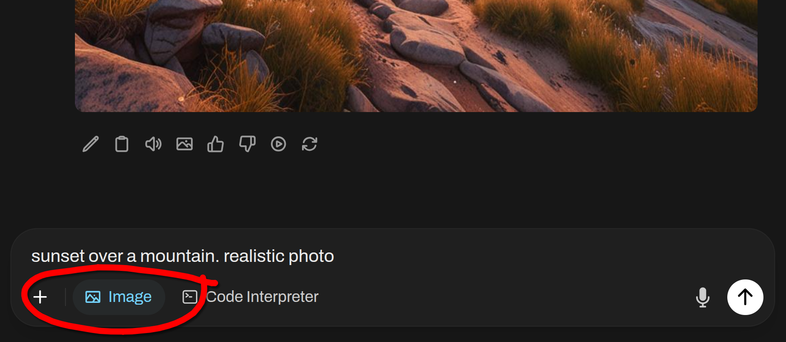

Este tutorial é uma contribuição da comunidade e não é suportado pela equipe Nullcore. Serve apenas como uma demonstração sobre como personalizar o Nullcore para o seu caso de uso especÃfico. Quer contribuir? Confira o tutorial contribuinte.
🨠Generação de imagem
O Nullcore suporta a geração de imagens através de três back -end:Automatic1111, Assim,Comfyui, eOpenai Dall · e. Este guia o ajudará a configurar e usar qualquer uma dessas opções.
Automatic1111
Nullcore suporta geração de imagens através doAutomatic1111 API. Aqui estão as etapas para começar:
Configuração inicial
-
Garantir que você temAutomatic1111instalado.
-
Inicie o Automatic1111 com sinalizadores adicionais para ativar o acesso da API:
./webui.sh --api -Listen -
Para a instalação do Docker de Webui com as variáveis ​​de ambiente predefinidas, use o seguinte comando:
docker run -d -p 3000:8080 --add-host=host.docker.internal:host-gateway -e AUTOMATIC1111_BASE_URL=http://host.docker.internal:7860/ -e ENABLE_IMAGE_GENERATION=True -v open-webui:/app/backend/data --name open-webui --restart always ghcr.io/open-webui/open-webui:Main
Configurando o Nullcore com Automatic1111
-
Em webui aberto, navegue para oPainel de AdministraçãoConfiguraçõesImagensmenu.
-
Defina o
Image Generation Enginecampo paraDefault (Automatic1111) -
No campo URL da API, insira o endereço em que a API do Automatic1111 está acessÃvel:
http: // <your_automatic1111_address>: 7860/Se você estiver executando uma instalação do Docker de Nullcore e Automatic1111 no mesmo host, use
http://host.docker.internal:7860/como seu endereço.
Comfyui
A Comfyui fornece uma interface alternativa para gerenciar e interagir com os modelos de geração de imagens. Saiba mais ou faça o download de seuPágina do Github. Abaixo estão as instruções de configuração para que a conformidade seja executada ao lado de suas outras ferramentas.
Configuração inicial
-
Baixar e extrair o pacote de software confortável deGithubpara o seu diretório desejado.
-
Para começar confortyui, execute o seguinte comando:
python main.pyPara sistemas com baixo VRAM, lance a Comfyui com sinalizadores adicionais para reduzir o uso da memória:
python main.py - -Lowvram -
Para a instalação do Docker de Webui com as variáveis ​​de ambiente predefinidas, use o seguinte comando:
docker run -d -p 3000:8080 --add-host=host.docker.internal:host-gateway -e COMFYUI_BASE_URL=http://host.docker.internal:7860/ -e ENABLE_IMAGE_GENERATION=True -v open-webui:/app/backend/data --name open-webui --restart always ghcr.io/open-webui/open-webui:Main
Configurando o Nullcore com Comfyui
Configurando o fluxo.1 modelos
- Ponto de verificação do modelo
- Baixe o
FLUX.1-schnellouFLUX.1-devmodelo doPágina de Huggingface Black-Forest-Labs - Coloque os pontos de verificação do modelo em ambos os
models/checkpointsemodels/unetDiretórios de Comfyui. Como alternativa, você pode criar um vÃnculo simbólico entremodels/checkpointsemodels/unetPara garantir que ambos os diretórios contenham os mesmos pontos de verificação do modelo.
- Modelo VAE
- Download
ae.safetensorsVae deaqui - Coloque -o no
models/vaeDiretório Comfyui.
- Modelo de clipe
- Download
clip_l.safetensorsdeaqui - Coloque -o no
models/clipDiretório Comfyui.
- Modelo T5xxl
- Baixe o
t5xxl_fp16.safetensorsout5xxl_fp8_e4m3fn.safetensorsmodelo deaqui - Coloque -o no
models/clipDiretório Comfyui.
Para integrar a conformidade à Webui Open, siga estas etapas:
Etapa 1: Configurar configurações de webui aberto
- Navegue até oPainel de Administraçãoem webui aberto.
- Clique emConfiguraçõese então selecione oImagensguia.
- No
Image Generation Enginecampo, escolhaComfyUI - NoAPI URLCampo, insira o endereço em que a API da Comfyui está acessÃvel, seguindo este formato:
http://<your_comfyui_address>:8188/- Defina a variável de ambiente
COMFYUI_BASE_URLPara este endereço, para garantir que ele persista no webui.
- Defina a variável de ambiente
Etapa 2: verifique a conexão e ativar a geração de imagens
- Certifique -se de estar em execução e que você verificou com sucesso a conexão para abrir o WebUI. Você não poderá prosseguir sem uma conexão bem -sucedida.
- Depois que a conexão for verificada, atendaGeração de imagens (experimental). Mais opções serão apresentadas a você.
- Continue na etapa 3 para as etapas finais de configuração.
Etapa 3: Configurar configurações confortáveis ​​e importar fluxo de trabalho
- Habilite o modo desenvolvedor no conformyui. Para fazer isso, procure o Ãcone de engrenagem acima doPrompt de filabotão dentro de conformidade e habilite o
Dev Modealternar. - Exportar o fluxo de trabalho desejado da conformidade em
API formatusando oSave (API Format)botão. O arquivo será baixado comoworkflow_api.jsonse feito corretamente. - Volte para abrir webui e clicar noClique aqui para fazer upload de um arquivo de trabalho de trabalho.jsonbotão.
- Selecione o
workflow_api.jsonArquivo para importar o fluxo de trabalho exportado da conformidade para o Nullcore. - Depois de importar o fluxo de trabalho, você deve mapear o
ComfyUI Workflow NodesDe acordo com os IDs de nó de fluxo de trabalho importados. - Definir
Set Default Modelao nome do arquivo de modelo que está sendo usado, comoflux1-dev.safetensors
Pode ser necessário ajustar umInput Keyou dois dentro de webui abertoComfyUI Workflow NodesSeção para corresponder a um nó dentro do seu fluxo de trabalho.
Por exemplo,seedpode precisar ser renomeado paranoise_seedPara corresponder a um ID do nó no seu fluxo de trabalho importado.
Alguns fluxos de trabalho, como aqueles que usam qualquer um dos modelos de fluxo, podem utilizar vários IDs de nós necessários para preencher seus campos de entrada de nós no webui aberto. Se um campo de entrada do nó exigir vários IDs, os IDs do nó devem ser separados por vÃrgula (por exemplo,1ou1, 2
- Clique
SavePara aplicar as configurações e desfrutar da geração de imagens com a Comfyui integrada ao Nullcore!
Depois de concluir essas etapas, sua configuração confortável deve ser integrada ao Nullcore e você pode usar o fluxo.1 Modelos para geração de imagens.
Configurando com Swarmui
A Swarmui utiliza conformyui como seu back -end. Para fazer com que o webui aberto funcione com o swarmui, você terá que anexarComfyBackendDirectpara oComfyUI Base URL. Além disso, você deseja configurar o Swarmui com acesso à LAN. Após os ajustes acima mencionados, a configuração do Swarmui para trabalhar com o Nullcore será o mesmo queEtapa um: Configurar configurações de webui abertoconforme descrito acima.
URL da API Swarmui
O endereço que você inserirá como o URL da Base Comfyui será:http://<your_swarmui_address>:7801/ComfyBackendDirect
Openai
Nullcore também suporta geração de imagens através doAPIs Openai. Esta opção inclui um seletor para escolher entre Dall · E 2, Dall · e 3 e GPT-Image-1, cada um com suporte de diferentes tamanhos de imagem.
Configuração inicial
- Obter umChave da APIde Openai.
Configurando Webui aberto
- Em webui aberto, navegue para oPainel de AdministraçãoConfiguraçõesImagensmenu.
- Defina o
Image Generation Enginecampo paraOpen AI - Digite sua chave de API do OpenAI.
- Escolha o modelo que você deseja usar. Observe que as opções de tamanho da imagem dependerão do modelo selecionado:
- Dall · e 2: Suportes
256x256, Assim,512x512, ou1024x1024imagens. - Dall · e 3: Suportes
1024x1024, Assim,1792x1024, ou1024x1792imagens. - Gpt-Image-1: Suportes
auto, Assim,1024x1024, Assim,1536x1024, ou1024x1536imagens.
- Dall · e 2: Suportes
Azure Openai
Usar o Azure OpenAi Dall-e diretamente não é suportado, mas você podeConfigure um proxy Litellmque é compatÃvel com oOpen AI (Dall-E)Engine de geração de imagens.
Roteador de imagem
Nullcore também suporta geração de imagens através doAPIs do roteador de imagem. O roteador de imagem é umcódigo abertoProxy de geração de imagens que unifica a maioria dos modelos populares em uma única API.
Configuração inicial
- Obter umChave da APIdo roteador de imagem.
Configurando Webui aberto
- Em webui aberto, navegue para oPainel de AdministraçãoConfiguraçõesImagensmenu.
- Defina o
Image Generation Enginecampo paraOpen AI(O roteador de imagem usa a mesma sintaxe que o OpenAI). - Altere o URL do endpoint da API para
https://api.imagerouter.io/v1/openai - Digite sua tecla API do roteador de imagem.
- Digite o modelo que você deseja usar. Não use o menu suspenso para selecionar modelos, insira o nome do modelo. Para mais informações,Veja todos os modelos
Usando geração de imagens
Método 1:
- Alternar o
Image GenerationLigue para LON. - Digite seu prompt de geração de imagem.
- Clique
Send

Método 2:

- Primeiro, use um modelo de geração de texto para escrever um prompt para geração de imagens.
- Após o término da resposta, você pode clicar no Ãcone da imagem para gerar uma imagem.
- Depois que a imagem terminar de gerar, ela será devolvida automaticamente no bate -papo.
Você também pode editar a resposta do LLM e inserir seu prompt de geração de imagens como a mensagem Para enviar para a geração de imagens em vez de usar a resposta real fornecida pelo Llm.